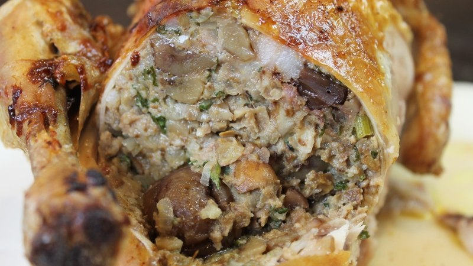

Poulet Farci

Ingrédients
- 150g de blanc de poulet
- 150g de poitrine de porc fumée
- 150g de foies de volaille
- 100g de bloc de foie gras
- 40g de pain
- 10cl de lait
- 100g de champignons de Paris
- 200g de marrons entiers
- 15g de persil
- 100g d'oignon
- 50g d'échalotes
- 10g d'ail
- 60g de beurre
- 30ml de cognac
- Sel
- Poivre
Directions
- Couper le pain en morceaux, le mettre dans un bol et verser le lait. Laisser imbiber pendant la préparation des autres ingrédients.
- Émincer l'oignon et les échalotes. Écraser les gousses d'ail. Ciseler le persil. Couper les champignons de Paris en morceaux.
- Couper le blanc de poulet et la poitrine de porc fumée en morceaux. Hacher grossièrement le tout au couteau (éviter le hachoir électrique pour garder la texture). Mettre les viandes dans un grand récipient.
- Dans une poêle chaude, faire fondre 10 g de beurre à feu vif. Ajouter les champignons et une pincée de sel. Faire revenir 3 minutes en remuant, puis laisser refroidir.
- Dans une autre poêle, faire fondre 40 g de beurre à feu doux. Ajouter l'oignon et l,échalote, cuire 5 minutes en remuant. Verser 30 ml de cognac, mélanger 10 secondes, puis retirer du feu et laisser refroidir.
- Faire fondre 10 g de beurre dans une poêle à feu doux. Ajouter les foies de volaille, les dorer 1 minute de chaque côté, saler légèrement, puis poursuivre la cuisson 10 minutes. Laisser refroidir.
- Dans un grand saladier, mélanger le poulet, la poitrine fumée, les foies de volaille, le mélange oignon-échalote au cognac, les champignons, les marrons entiers, le persil, l'ail, et 100 g de foie gras coupé en morceaux. Ajouter le pain imbibé, 1 c. à café de sel et du poivre. Mélanger à la main sans écraser les marrons.
- Farcir la volaille avec la préparation. Fermer l'ouverture avec des pics en bois ou ficeler soigneusement.
- Déposer la volaille dans un plat allant au four. Ajouter 10 cl d'eau, un filet d'huile d'olive et un peu de sel. Enfourner à 180°C (350°F) pendant 1 h 15.
- Retourner la volaille deux fois pendant la cuisson (toutes les 25 minutes) et l'arroser de son jus à chaque fois. Terminer la cuisson jusqu'à ce qu'elle soit bien dorée.
- Retirer les pics avant de servir. Arroser de jus de cuisson et déguster bien chaud.
Home